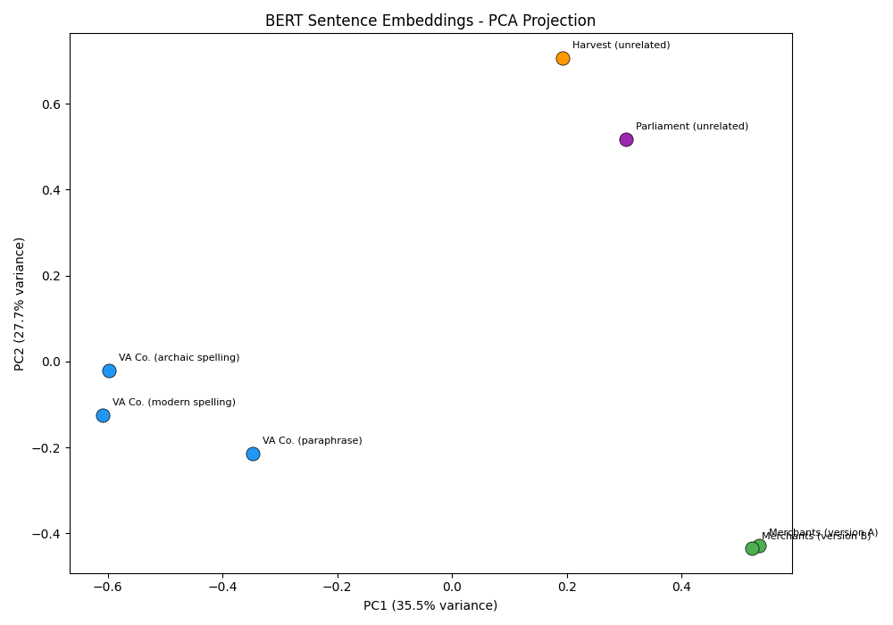
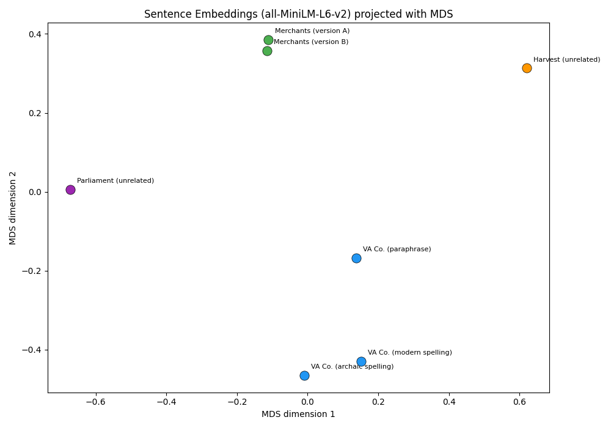

Week 11: Introduction to BERT
Weeks 11-13 goals:
With this tutorial, we are starting a three-week unit on BERT (and BERT-related models). This is how the three weeks will work together:
Week 11: this tutorial uses a toy paraphrase corpus to practice tokenization; compare TF-IDF vs. BERT similarity; work with PCA visualization, and understand masked language modeling. We will end with a preview of how base BERT handles Early Modern English (we could do better…). This will set us up for…
Week 12: this is where we learn how to fine-tune the model. We will work with the Geneva Bible (you can find a .xlsx file on Canvas under “Weeks 11-13”, titled “genevaBible.xlsx” alongside the corpus that we will work with in Week 13) and the tutorial will walk you through the full training loop using HuggingFace’s Trainer. We will then compare before/after predictions side by side. At the end, we save fine-tuned model for Week 13.
Week 13: this is where our hard work pays off. We will work with 626 mercantile .txt files, embed them using the fine-tuned model, cluster them with K-Means (with elbow/silhouette analysis for choosing k), and characterizes each cluster with TF-IDF top terms. We will end the tutorial by analyzing the possible meanings of the term “credit” in our corpus. In the 16th and 17th century, the meaning of the term “credit” spanned a wide spectrum, from social values that hinted at honor and trustworthiness to a judgment of economic ability (see the fantastic article by Alexandra Shepard, “Manhood, Credit and Patriarchy in Early Modern England c. 1580-1640” in Past & Present (May, 2000), pp. 75-106). In this tutorial, we will work on analyzing these shades of meaning by finding every occurrence, extracting word-level contextual embeddings, clustering them into semantic senses, identifying the most ambiguous borderline cases, and cross-tabulating credit senses against document clusters. We will end with a base-vs-fine-tuned comparison of how the model performs!
Let’s get started!
Week 11: How BERT Reads — From Tokens to Embeddings
At the end of Week 10, I pointed out that spaCy’s NER model works by building contextual token embeddings: numerical representations that capture not just a word’s meaning in isolation, but its meaning in context. The example we used was “Apple”: the word gets a different embedding in “Apple released a new phone” versus “I ate an apple.”
Over these two weeks, we are going to build on this idea and we are going to consider how we can leverage this type of representation to compare meaning over time. That is, how can we use contextual embedding when the context is not just a different sentence, but a different century.
We will work with BERT (Bidirectional Encoder Representations from Transformers), a model that builds contextual embeddings using a transformer architecture. The key difference from spaCy’s default CNN-based embeddings is that BERT uses self-attention: every token’s representation is informed by every other token in the sentence simultaneously, not just a local window.
Our plan is to:
- Understand how BERT tokenizes text (and why it matters)
- Extract sentence-level embeddings using BERT
- Compare sentence similarity using both TF-IDF and BERT
- Visualize embedding spaces with PCA
- See what BERT “knows” through masked language modeling
We will work with a small, hand-built toy corpus so that every result is interpretable. Next week, we scale up.
Part I — From Word2Vec to BERT: The Conceptual Shift
Static Embeddings vs. Contextual Embeddings
Word2Vec assigns one vector per word type. The word “company” gets a single representation regardless of whether it appears in “the East India Company” or “I enjoy her company.” This is a real limitation when words have multiple senses.
BERT assigns one vector per token occurrence. The embedding for “company” depends on the surrounding words in that specific sentence. “The East India Company traded spices” and “She was pleasant company at dinner” will produce different vectors for the same word.
How does BERT learn this?
BERT was pre-trained on a massive corpus (Wikipedia + BookCorpus) using two tasks:
Masked Language Modeling (MLM): randomly mask 15% of tokens in a sentence, then predict what the masked tokens were. This forces BERT to build representations that encode the full context of each token.
Next Sentence Prediction: given two sentences, predict whether the second follows the first in the original text.
The result of this training is a model that encodes deep “knowledge” about how English works (I won’t always use scare quotes, but obviously a model doesn’t “know” anything). We can then extract and use those representations for our own purposes.
BERT’s Architecture (Conceptual)
At a high level, BERT processes text in three stages:
- Tokenization → the input sentence is broken into subword tokens using WordPiece tokenization.
- Transformer layers → each token passes through a stack of self-attention layers (12 layers in
bert-base), where each token’s representation is updated based on all other tokens in the sentence. - Output → the final layer produces a 768-dimensional vector for each token, encoding its meaning in context.
These output vectors are the contextual embeddings we will work with.
A quick aside:
When a sentence is processed by BERT, the model does not receive the raw sentence directly. Instead, the input sequence is structured like this:
[CLS] The king ruled England . [SEP]
Where:
[CLS]→ special token marking the start of the sequence[SEP]→ separator token marking the end of the sequence (or separating two sentences)
After tokenization, BERT produces an embedding for every token, including [CLS] and [SEP].
BERT-base, BERT-Large, RoBERTa, ModernBERT, DistilBERT, MacBERTh and GysBERT,… Oh my!
There are a lot of BERT variants and we will talk more about this in our reading for Friday! For this tutorial, we will work with the base model and a smaller model (more on that later).
Part II — Setup
Install Packages:
You should already have scikit-learn and matplotlib from previous weeks. We need to add a few new packages:
#| eval: false
# Run these in your terminal:
# pip install transformers torch sentence-transformersThis will take a few minutes: torch in particular is a large download. Once this is done, you can verify the installation. Now, create a new file step0_setup.py:
import torch
from transformers import BertTokenizer, BertModel
from sentence_transformers import SentenceTransformer
from sklearn.metrics.pairwise import cosine_similarity
from sklearn.feature_extraction.text import TfidfVectorizer
from sklearn.decomposition import PCA
import numpy as np
import matplotlib.pyplot as plt
print("PyTorch version:", torch.__version__)
print("All imports successful.")Part III — Our Toy Corpus
Now that we are set up, we can start working with BERT. We will build a small corpus by hand. The sentences are designed to test specific things: paraphrase detection, spelling variation, and semantic similarity across different phrasings.
Create a new file, step1_tfidf_baseline.py, we will use this file for the creation of the toy corpus and for Part IV as well, so you will keep adding to it until we finish TF-IDF similarity. Start by creating two lists which we will name sentences and labels:
sentences = [
# Group 1: Virginia Company — same content, different phrasing/spelling
"The Virginia Companie did advance traffique beyond the seas.",
"The Virginia Company did advance traffic beyond the seas.",
"The Virginia Company promoted overseas trade.",
# Group 2: Merchant activity
"The merchants of London traded in silks and spices.",
"London merchants engaged in the silk and spice trade.",
# Group 3: Unrelated (control)
"The harvest was plentiful this year.",
"Parliament assembled to debate the new taxation.",
]
# Labels for reference
labels = [
"VA Co. (archaic spelling)",
"VA Co. (modern spelling)",
"VA Co. (paraphrase)",
"Merchants (version A)",
"Merchants (version B)",
"Harvest (unrelated)",
"Parliament (unrelated)",
]Take a moment to think about what you expect given your experience in this class so far:
- Sentences 0, 1, and 2 say the same thing. Should their similarity be high?
- Sentences 3 and 4 are paraphrases of each other.
- Sentences 5 and 6 are about completely different topics.
Part IV — Baseline: TF-IDF Similarity
Before we use BERT, let’s establish a baseline with TF-IDF. This represents each sentence as a sparse vector of word frequencies, weighted by how distinctive each word is. The next block of code will do the following four things:
Turn the sentences into TF-IDF vectors
Compute cosine similarity between every pair of sentences
Create a similarity matrix
Print the matrix in a human-readable labeled table
vectorizer = TfidfVectorizer()
tfidf_matrix = vectorizer.fit_transform(sentences)
tfidf_sim = cosine_similarity(tfidf_matrix)
# Display as a formatted table
print("TF-IDF Cosine Similarity Matrix:\n")
print(f"{'':>30s}", end="")
for i in range(len(sentences)):
print(f" [{i}]", end="")
print()
for i in range(len(sentences)):
print(f"{labels[i]:>30s}", end="")
for j in range(len(sentences)):
print(f" {tfidf_sim[i][j]:5.2f}", end="")
print()Your output should look like:
TF-IDF Cosine Similarity Matrix:
[0] [1] [2] [3] [4] [5] [6]
VA Co. (archaic spelling) 1.00 0.68 0.17 0.05 0.06 0.06 0.06
VA Co. (modern spelling) 0.68 1.00 0.32 0.06 0.06 0.06 0.06
VA Co. (paraphrase) 0.17 0.32 1.00 0.03 0.17 0.04 0.04
Merchants (version A) 0.05 0.06 0.03 1.00 0.43 0.03 0.03
Merchants (version B) 0.06 0.06 0.17 0.43 1.00 0.03 0.03
Harvest (unrelated) 0.06 0.06 0.04 0.03 0.03 1.00 0.03
Parliament (unrelated) 0.06 0.06 0.04 0.03 0.03 0.03 1.00Look at the TF-IDF similarity between sentences 0 and 2 (“The Virginia Companie did advance traffique beyond the seas” vs. “The Virginia Company promoted overseas trade”). These sentences mean the same thing, but because they use mostly different words, TF-IDF gives them a relatively low similarity score.
Also look at sentences 0 and 1: the only difference is spelling (“Companie” → “Company”, “traffique” → “traffic”), but TF-IDF treats these as completely different tokens. This is a fundamental limitation of bag-of-words methods for historical text.
Part V — BERT Sentence Embeddings
Now let’s see how BERT handles the same sentences. We will use sentence-transformers, which wraps a BERT-based model optimized for computing sentence similarity.
How do we select a model?
The most systematic comparison of embedding models today is the MTEB leaderboard.
It’s a benchmark created by Hugging Face researchers. It evaluates sentence-embedding models across 50+ tasks, including (of interest to us):
semantic similarity
clustering
classification
I find the MTEB table to be overwhelming when I am looking for models with specific strengths. My best advice is to search scholarly reviews of models by specific tasks (like this one) and if I see that a couple of models perform well on the tasks I am interested in, then I loop back to the MTEB table for more information.
Now, create a new file : step2_bert_similarity.py.
from sentence_transformers import SentenceTransformer
from sklearn.metrics.pairwise import cosine_similarity
sentences = [
"The Virginia Companie did advance traffique beyond the seas.",
"The Virginia Company did advance traffic beyond the seas.",
"The Virginia Company promoted overseas trade.",
"The merchants of London traded in silks and spices.",
"London merchants engaged in the silk and spice trade.",
"The harvest was plentiful this year.",
"Parliament assembled to debate the new taxation.",
]
labels = [
"VA Co. (archaic spelling)",
"VA Co. (modern spelling)",
"VA Co. (paraphrase)",
"Merchants (version A)",
"Merchants (version B)",
"Harvest (unrelated)",
"Parliament (unrelated)",
]
# Load a sentence-transformer model
# all-MiniLM-L6-v2 is a lightweight, fast model good for similarity tasks
# see point [1] after the code block
model = SentenceTransformer("all-MiniLM-L6-v2")
# Encode all sentences into 384-dimensional vectors. See point [2] below
embeddings = model.encode(sentences)
print(f"Embedding shape: {embeddings.shape}")
print(f"Each sentence is now a vector of {embeddings.shape[1]} numbers.\n")
# Compute BERT-based similarity
bert_sim = cosine_similarity(embeddings)
print("BERT Cosine Similarity Matrix:\n")
print(f"{'':>30s}", end="")
for i in range(len(sentences)):
print(f" [{i}]", end="")
print()
for i in range(len(sentences)):
print(f"{labels[i]:>30s}", end="")
for j in range(len(sentences)):
print(f" {bert_sim[i][j]:5.2f}", end="")
print()Note: you may get a warning message about a parameter called embeddings.position_ids . You can safely ignore this. You can see that the embedding correctly encoded the 7 sentences as 384-dimensional vectors.
- Regarding
all-MiniLM-L6-v2: if you want to know where does this smaller model come from, you can find the details here and here. - When we call
model.encode(sentences), the transformer processes the sentence in several stages: first, tokenization (the sentence is broken into subword tokens); second, in the transformer layers (each token representation is updated using self-attention); third, pooling (the model combines the token vectors into a single sentence embedding). In the model we are using (all-MiniLM-L6-v2), the final sentence embedding has 384 dimensions. Each sentence is therefore represented as a point in a 384-dimensional semantic space, which allows us to measure similarity using cosine distance.
You will also get a BERT Cosine Similarity Matrix that looks like this:
[0] [1] [2] [3] [4] [5] [6]
VA Co. (archaic spelling) 1.00 0.76 0.58 0.19 0.19 0.10 0.11
VA Co. (modern spelling) 0.76 1.00 0.66 0.21 0.23 0.05 0.07
VA Co. (paraphrase) 0.58 0.66 1.00 0.39 0.41 0.14 0.08
Merchants (version A) 0.19 0.21 0.39 1.00 0.95 0.13 0.19
Merchants (version B) 0.19 0.23 0.41 0.95 1.00 0.12 0.19
Harvest (unrelated) 0.10 0.05 0.14 0.13 0.12 1.00 0.06
Parliament (unrelated) 0.11 0.07 0.08 0.19 0.19 0.06 1.00What to notice
Compare these numbers to the TF-IDF matrix:
- Paraphrase detection: sentences 0, 1, and 2 now show a higher similarity, because BERT recognizes that “advance traffique beyond the seas” and “promoted overseas trade” mean the same thing.
- Spelling robustness: “Companie” vs. “Company” matter much less to BERT than to TF-IDF.
- Semantic grouping: sentences 3 and 4 (the merchant pair) are now very similar, and both are closer to the Virginia Company sentences (all about trade) than to sentence 5 (harvest) or 6 (Parliament).
Part VI — Side-by-Side: The Virginia Company Trio
Let’s isolate the three Virginia Company sentences to really see the difference between TF-IDF and BERT. Create a new file: step3_trio_comparison.py.
from sentence_transformers import SentenceTransformer
from sklearn.feature_extraction.text import TfidfVectorizer
from sklearn.metrics.pairwise import cosine_similarity
# --- The Virginia Company trio ---
trio = [
"The Virginia Companie did advance traffique beyond the seas.",
"The Virginia Company did advance traffic beyond the seas.",
"The Virginia Company promoted overseas trade."
]
trio_labels = ["Archaic spelling", "Modern spelling", "Paraphrase"]
# --- TF-IDF ---
vectorizer = TfidfVectorizer()
tfidf_trio = vectorizer.fit_transform(trio)
tfidf_trio_sim = cosine_similarity(tfidf_trio)
# --- BERT ---
print("Loading model...")
model = SentenceTransformer("all-MiniLM-L6-v2")
bert_trio = model.encode(trio)
bert_trio_sim = cosine_similarity(bert_trio)
# --- Compare ---
print("\n=== Virginia Company Trio ===\n")
print("TF-IDF Similarity:")
for i in range(3):
for j in range(3):
print(f" {trio_labels[i]:20s} <-> {trio_labels[j]:20s} : {tfidf_trio_sim[i][j]:.3f}")
print()
print("BERT Similarity:")
for i in range(3):
for j in range(3):
print(f" {trio_labels[i]:20s} <-> {trio_labels[j]:20s} : {bert_trio_sim[i][j]:.3f}")
print()TF-IDF Cosine Similarity
| Archaic spelling | Modern spelling | Paraphrase | |
|---|---|---|---|
| Archaic spelling | 1.000 | 0.694 | 0.206 |
| Modern spelling | 0.694 | 1.000 | 0.331 |
| Paraphrase | 0.206 | 0.331 | 1.000 |
BERT Similarity
| Archaic spelling | Modern spelling | Paraphrase | |
|---|---|---|---|
| Archaic spelling | 1.000 | 0.757 | 0.579 |
| Modern spelling | 0.757 | 1.000 | 0.658 |
| Paraphrase | 0.579 | 0.658 | 1.000 |
Earlier in the semester, we compared documents using token-level features such as word counts or TF-IDF weights. The all-MiniLM-L6-v2 embeddings move beyond individual words and instead represent the overall meaning of a sentence, allowing the model to recognize similarity even when the wording changes. For historical text, where spelling varies, vocabulary changes, and meaning persists, this distinction is crucial.
Part VII — Visualizing the Embedding Space (PCA & MDS)
To help us understand a bit better this toy corpus of 7 sentences, it would be helpful to visualize how each of them is represented as a vector. Obviously, we can’t plot in 384 dimensions, so we will need to do dimension reduction.
First, we will use PCA (Principal Component Analysis) to project the vectors into 2D and see how BERT organizes them spatially. PCA finds the directions in the embedding space that capture the largest variance in the data and projects the points onto those directions. This means that PCA is useful for a quick overview, but is not designed to preserve the pairwise cosine similarity relationships.
So, you will want to use PCA when you want to:
Get a quick overview of the embedding space
Identify major directions of variation in the data
Produce a fast, deterministic projection of vectors
It also works well with larger datasets, though this is not the case here.
Now, create a new file: step4_visualize_pca.py :
from sentence_transformers import SentenceTransformer
from sklearn.decomposition import PCA
from sklearn.metrics.pairwise import cosine_similarity
import matplotlib.pyplot as plt
import numpy as np
# --- Same toy corpus ---
sentences = [
"The Virginia Companie did advance traffique beyond the seas.",
"The Virginia Company did advance traffic beyond the seas.",
"The Virginia Company promoted overseas trade.",
"The merchants of London traded in silks and spices.",
"London merchants engaged in the silk and spice trade.",
"The harvest was plentiful this year.",
"Parliament assembled to debate the new taxation.",
]
labels = [
"VA Co. (archaic spelling)",
"VA Co. (modern spelling)",
"VA Co. (paraphrase)",
"Merchants (version A)",
"Merchants (version B)",
"Harvest (unrelated)",
"Parliament (unrelated)",
]
# --- Embed ---
print("Loading model and embedding sentences...")
model = SentenceTransformer("all-MiniLM-L6-v2")
embeddings = model.encode(sentences)
# --- PCA ---
pca = PCA(n_components=2)
reduced = pca.fit_transform(embeddings)
print(f"Variance explained: PC1={pca.explained_variance_ratio_[0]:.1%}, "
f"PC2={pca.explained_variance_ratio_[1]:.1%}")
# --- Plot ---
# Colors by semantic group
group_colors = ["#2196F3", "#2196F3", "#2196F3", # VA Company (blue)
"#4CAF50", "#4CAF50", # Merchants (green)
"#FF9800", # Harvest (orange)
"#9C27B0"] # Parliament (purple)
fig, ax = plt.subplots(figsize=(10, 7))
for i in range(len(reduced)):
ax.scatter(reduced[i, 0], reduced[i, 1],
c=group_colors[i], s=120, zorder=5, edgecolors="black", linewidths=0.5)
ax.annotate(labels[i], (reduced[i, 0], reduced[i, 1]),
textcoords="offset points", xytext=(8, 8), fontsize=8)
ax.set_xlabel(f"PC1 ({pca.explained_variance_ratio_[0]:.1%} variance)")
ax.set_ylabel(f"PC2 ({pca.explained_variance_ratio_[1]:.1%} variance)")
ax.set_title("BERT Sentence Embeddings - PCA Projection")
plt.tight_layout()
plt.savefig("pca_toy_corpus.png", dpi=150, bbox_inches="tight")
plt.show()
print("\nSaved plot to pca_toy_corpus.png")
print("\n--- What to look for ---")
print("- The three VA Company sentences (blue) should cluster together.")
print("- The two merchant sentences (green) should cluster together.")
print("- Harvest (orange) and Parliament (purple) should be further away.")
As we would expect:
- The three Virginia Company sentences (the blue dots on the left) cluster together.
- The two merchant sentences (the green dots in the lower right corner) cluster very close together.
- The harvest and Parliament sentences are further away from the trade-related cluster.
- Within the VA Company cluster, BERT did a great job of handling the archaic and modern spelling, keeping them quite close to each other.
Because PCA is a linear projection, it is also easy to interpret and computationally very stable.
However, you want to be careful with PCA: two sentences that are very similar in cosine space may not appear close together in the PCA projection because PCA is not designed to preserve pairwise distances.
Our other option is MDS (Multidimensional Scaling) with cosine distance. MDS starts from a distance matrix (for example cosine distance between embeddings) and places points in 2D so that the distances between points are preserved as closely as possible. This is useful for us because MDS gives us a good visual representation in which sentences that are semantically similar appear closer together, and sentences that are less similar appear farther apart.
So, you will want to use MDS when you want to:
- Visualize semantic similarity relationships
- Preserve cosine similarity structure
- Show clusters of related sentences.
However, while this is not a problem for our toy corpus, MDS becomes impractical with larger corpora. This is because MDS operates on an \(n^2\) distance matrix, which can grow out of control quickly. I would avoid using MDS with anything more than 200 documents. Remember: we are embedding documents as a unit (that is, one document = one vector), so the visualization depends on the number of documents rather than the number of words in each document.
PCA scales better to larger corpora, because it projects the embedding vectors without computing the full distance matrix.
Create a new file step4_visualize_mds.py :
from sentence_transformers import SentenceTransformer
from sklearn.metrics.pairwise import cosine_distances
from sklearn.manifold import MDS
import matplotlib.pyplot as plt
sentences = [
"The Virginia Companie did advance traffique beyond the seas.",
"The Virginia Company did advance traffic beyond the seas.",
"The Virginia Company promoted overseas trade.",
"The merchants of London traded in silks and spices.",
"London merchants engaged in the silk and spice trade.",
"The harvest was plentiful this year.",
"Parliament assembled to debate the new taxation.",
]
labels = [
"VA Co. (archaic spelling)",
"VA Co. (modern spelling)",
"VA Co. (paraphrase)",
"Merchants (version A)",
"Merchants (version B)",
"Harvest (unrelated)",
"Parliament (unrelated)",
]
group_colors = [
"#2196F3", "#2196F3", "#2196F3",
"#4CAF50", "#4CAF50",
"#FF9800",
"#9C27B0"
]
print("Loading model and embedding sentences...")
model = SentenceTransformer("all-MiniLM-L6-v2")
embeddings = model.encode(sentences, normalize_embeddings=True)
# Cosine distance matrix
dist_matrix = cosine_distances(embeddings)
# 2D projection that tries to preserve pairwise distances
mds = MDS(
n_components=2,
dissimilarity="precomputed",
random_state=42,
metric=True
)
reduced = mds.fit_transform(dist_matrix)
fig, ax = plt.subplots(figsize=(10, 7))
for i in range(len(reduced)):
ax.scatter(
reduced[i, 0], reduced[i, 1],
c=group_colors[i], s=120,
edgecolors="black", linewidths=0.5, zorder=5
)
ax.annotate(
labels[i],
(reduced[i, 0], reduced[i, 1]),
textcoords="offset points",
xytext=(8, 8),
fontsize=8
)
ax.set_xlabel("MDS dimension 1")
ax.set_ylabel("MDS dimension 2")
ax.set_title("Sentence Embeddings (all-MiniLM-L6-v2) projected with MDS")
plt.tight_layout()
plt.savefig("mds_toy_corpus.png", dpi=150, bbox_inches="tight")
plt.show()Once you run the code, you should see:

Question for the reader: why do you think the MDS visualization looks this way?
Part VIII — Semantic Search (Retrieval)
Now that we have played around with our embeddings and visualized them, let’s start looking at a simple application. In the next couple of weeks, we will go in more depth on specific applications with a real corpus, but this example will give us a good starting point.
An important, practical application of sentence embeddings is semantic search: given a query, find the most similar sentence in a corpus. Instead of matching documents based on shared keywords, we represent both the query and the documents as vectors in an embedding space. We then retrieve the documents whose vectors are closest to the query vector using cosine similarity.
Create a new file: step5_semantic_search.py:
from sentence_transformers import SentenceTransformer
from sklearn.metrics.pairwise import cosine_similarity
# --- Same toy corpus ---
sentences = [
"The Virginia Companie did advance traffique beyond the seas.",
"The Virginia Company did advance traffic beyond the seas.",
"The Virginia Company promoted overseas trade.",
"The merchants of London traded in silks and spices.",
"London merchants engaged in the silk and spice trade.",
"The harvest was plentiful this year.",
"Parliament assembled to debate the new taxation.",
]
# --- Embed the corpus ---
print("Loading model...")
model = SentenceTransformer("all-MiniLM-L6-v2")
embeddings = model.encode(sentences)
# --- Query ---
query = "The Virginia Company expanded trade overseas."
query_embedding = model.encode([query])
similarities = cosine_similarity(query_embedding, embeddings)[0]
print(f'Query: "{query}"\n')
print("Ranked results:")
print("-" * 70)
ranked = sorted(enumerate(similarities), key=lambda x: x[1], reverse=True)
for rank, (idx, sim) in enumerate(ranked, 1):
print(f" {rank}. [{sim:.3f}] {sentences[idx]}")This same idea underlies modern semantic search systems and retrieval-augmented generation (RAG). Instead of retrieving documents based on keyword overlap, the system retrieves documents whose embeddings are closest to the query embedding in semantic space.
Brief Aside: from semantic search to RAG
The same idea used in our small example is the core retrieval step in many modern AI systems. A typical RAG pipeline works like this:
Step 1: Build embeddings for a document collection. A large corpus (articles, books, PDFs, archival texts, etc.) is split into chunks and converted into embeddings using a model like BERT or Sentence-BERT.
Step 2: Store the embeddings in a vector database. Each text chunk is stored together with its embedding so the system can quickly search for similar vectors.
Step 3: Embed the user’s query. When a user asks a question, the system converts the query into an embedding using the same model.
Step 4: Retrieve the most similar passages. The system computes cosine similarity between the query embedding and the stored embeddings and retrieves the closest matches.
Step 5: Provide the retrieved text to an LLM. The retrieved passages are inserted into the prompt of a language model so that the model can generate an answer grounded in those sources.
Retrieval-Augmented Generation (RAG) is essentially semantic search plus text generation: first the system retrieves relevant passages using embeddings, then a language model uses those passages to generate an answer.
It would look something like the following chunk of code.
- Note: you would have to have an API key to run this code, so it won’t work unless you have an account with OpenAI, which is what I happen to use for this type of work, though I am experimenting with others as well. This is here as an example so that you know what this process would look like, but you won’t be able to run it!
# Mini RAG Demonstration: for OpenAI, don't try to run it as it won't work!
from sentence_transformers import SentenceTransformer
from sklearn.metrics.pairwise import cosine_similarity
sentences = [
"The Virginia Companie did advance traffique beyond the seas.",
"The Virginia Company did advance traffic beyond the seas.",
"The Virginia Company promoted overseas trade.",
"The merchants of London traded in silks and spices.",
"London merchants engaged in the silk and spice trade.",
"The harvest was plentiful this year.",
"Parliament assembled to debate the new taxation.",
]
# Load the embedding model (all-MiniLM-L6-v2 in our case)
model = SentenceTransformer("all-MiniLM-L6-v2")
# Encode the corpus once
embeddings = model.encode(sentences)
# Build a simple "vector database" simulation--see point [1] below
vector_store = [
{
"id": i,
"text": sentences[i],
"embedding": embeddings[i],
"source": "toy corpus"
}
for i in range(len(sentences))
]
print("Vector store created with", len(vector_store), "records.\n")
# Embed the query in the same semantic vector space
query = "How did the Virginia Company expand overseas trade?"
query_embedding = model.encode([query])[0]
print(f'Query: "{query}"\n')
# Retrieve the most similar records using cosine similarity for all records in
# the vector database. Then sort from highest to lowest similarity.
scored_results = []
for record in vector_store:
score = cosine_similarity([query_embedding], [record["embedding"]])[0][0]
scored_results.append((score, record))
# Sort results: highest similarity first
scored_results.sort(key=lambda x: x[0], reverse=True)
# Retrieve the top-k most relevant passages
top_k = 3
retrieved_records = [record for score, record in scored_results[:top_k]]
print("Top retrieved passages:")
for rank, (score, record) in enumerate(scored_results[:top_k], start=1):
print(f"{rank}. [{score:.3f}] {record['text']}")
# Build the context and prompt. See point [2] below.
context = "\n".join([record["text"] for record in retrieved_records])
prompt = f"""
Answer the question using only the context below.
Context:
{context}
Question:
{query}
Answer:
"""
print("\n" + "-" * 60)
print("Prompt that would be sent to the language model:")
print("-" * 60)
print(prompt)
# Generation step with the OpenAI API. See note [3] below.
from openai import OpenAI
api_key = "" # Optional: paste your OpenAI API key here
if api_key:
client = OpenAI(api_key=api_key)
response = client.responses.create(
model="gpt-4.1-mini",
input=prompt
)
print("-" * 60)
print("Generated answer:")
print("-" * 60)
print(response.output_text)
else:
print("\nNo API key provided.")
print("Retrieval step completed successfully.")
print("To run the generation step, paste your API key into the api_key variable above.")In a real RAG system, a vector database stores: the text chunk; its embedding; and its metadata (id, title, source, etc.). Here we simulate that with a Python list of dictionaries.
In RAG, the retrieved passages are inserted into the prompt so the language model can answer using them as evidence.
If you stop at the retrieval + prompt step, you can actually run this code. For completeness, I want you to have an example of the full generation step, you can use the “generation step” by pasting a key into the api_key variable (not the most secure way to do this because you do not want to share your key, so you want to make sure that you don’t, for example, post it on GitHub!!!). If no key is available, the code will just print a message and stop after building the prompt.
Part IX — Masked Language Modeling
BERT was pretrained using masked language modeling (MLM). During training, about 15% of tokens are hidden, and the model must predict them using the surrounding context. (These tokens are usually replaced with [MASK], though sometimes they are replaced with random tokens or left unchanged so the model cannot rely on the mask symbol alone. In a 80/10/10 split of [MASK], random token, unchanged.)
BERT was trained to predict masked tokens. We can use this to probe what the model has learned. This is called masked language modeling (MLM), and it will become very important next week when we fine-tune BERT on historical text. We are going to load a pretrained BERT model, bert-base-uncased. This is the original BERT model trained on tasks like masked language modeling, which helps it learn general language patterns and contextual relationships between words. However, it was not designed to produce good sentence-level embeddings for similarity tasks. By contrast, the model we were using above, all-MiniLM-L6-v2, is a smaller transformer model that has been fine-tuned using sentence similarity data, making it much better suited for tasks like semantic search, clustering, and cosine similarity comparisons between sentences.
Comparing the Models We Used
| Model | Training Objective | Best Use Case |
|---|---|---|
| bert-base-uncased | Trained with masked language modeling (MLM) to predict missing words in sentences | Understanding language patterns and predicting masked words |
| all-MiniLM-L6-v2 | Fine-tuned on sentence similarity tasks using contrastive learning | Sentence embeddings, semantic search, clustering, cosine similarity |
Although both models are based on transformer architectures, they are optimized for different purposes. bert-base-uncased is designed to model language and predict masked words, while all-MiniLM-L6-v2 is optimized to produce sentence embeddings that can be compared using cosine similarity. Also, and importantly for us, MiniLM models are also much smaller and faster than the original BERT models, which makes them practical for computing embeddings for large collections of sentences.
Researchers have also created smaller versions of BERT that run faster while preserving most of its capabilities. A standard example is DistilBERT, which compresses the original BERT architecture into a lighter model using a technique called knowledge distillation. For those of you who are interested in knowledge distillation, here’s a list of good starting points:
HuggingFace tutorial that uses DistilBERT.
The foundational paper on knowledge distillation; Hinton, Vinyals, & Dean (2015).
The DistilBERT paper; Sanh et al (2019).
A different compressed BERT model (MiniLM), including the one we used
all-MiniLM-L6-v2, paper; Wang et al. (2020).A survey of BERT compression methods; Xu et al. (2021).
For this class, you don’t need any of the above information (except you might like the HuggingFace tutorial). But I know that many (some) of you want to dig deeper.
Create a new (and final) file: step6_mlm.py.
from transformers import pipeline
# Load fill-mask pipeline
print("Loading BERT for masked language modeling...")
fill_mask = pipeline("fill-mask", model="bert-base-uncased")
# MLM on modern-ish sentences
print("\n=== Masked Language Modeling (Modern Sentences) ===\n")
print("BERT predicts the most likely word for [MASK]:\n")
modern_tests = [
"The Virginia Company traded [MASK] across the Atlantic.",
"The merchants of London bought and sold [MASK].",
"The king granted a royal [MASK] to the trading company.",
]
for sent in modern_tests:
print(f"Input: {sent}")
results = fill_mask(sent)
for r in results[:3]:
print(f" -> {r['token_str']:15s} (score: {r['score']:.3f})")
print()Your output will look like this:
=== Masked Language Modeling (Modern Sentences) ===
BERT predicts the most likely word for [MASK]:
Input: The Virginia Company traded [MASK] across the Atlantic.
-> goods (score: 0.120)
-> coal (score: 0.100)
-> products (score: 0.043)
Input: The merchants of London bought and sold [MASK].
-> it (score: 0.141)
-> them (score: 0.108)
-> slaves (score: 0.102)
Input: The king granted a royal [MASK] to the trading company.
-> charter (score: 0.963)
-> warrant (score: 0.009)
-> license (score: 0.006)
These predictions reveal what BERT “knows” from its training data. Notice that BERT predicts modern words in modern-feeling contexts.
We now want to see what happens when we give it Early Modern English. In the same file, add the following:
historical_tests = [
"The companie did [MASK] traffique beyond the seas.",
"The merchants had [MASK] in silkes and spices.",
"to all Sea-men [MASK] an enchanted den of Furies and Devils.",
]
for sent in historical_tests:
print(f"Input: {sent}")
results = fill_mask(sent)
for r in results[:3]:
print(f" -> {r['token_str']:15s} (score: {r['score']:.3f})")
print()The output looks like:
Input: The companie did [MASK] traffique beyond the seas.
-> not (score: 0.814)
-> no (score: 0.029)
-> a (score: 0.017)
Input: The merchants had [MASK] in silkes and spices.
-> traded (score: 0.697)
-> brought (score: 0.087)
-> trade (score: 0.065)
Input: to all Sea-men [MASK] an enchanted den of Furies and Devils.
-> is (score: 0.290)
-> was (score: 0.223)
-> lies (score: 0.162)
BERT is having somewhat of a hard time here. The first input is obviously challenging and the third input is from Captain John Smith’s description of a shipwreck in the Bermudas, that should read “no less terrible than” for the [MASK]. It was trained on modern text (Wikipedia, contemporary books), so Early Modern spellings and syntax are outside its comfort zone. The predictions are plausible (especially given how difficult the third input is), but slightly off and the confidence scores are noticeably lower.
This is the motivation for next week: if we fine-tune BERT on historical text, we can teach it to be better at understanding and predicting the language of our period.